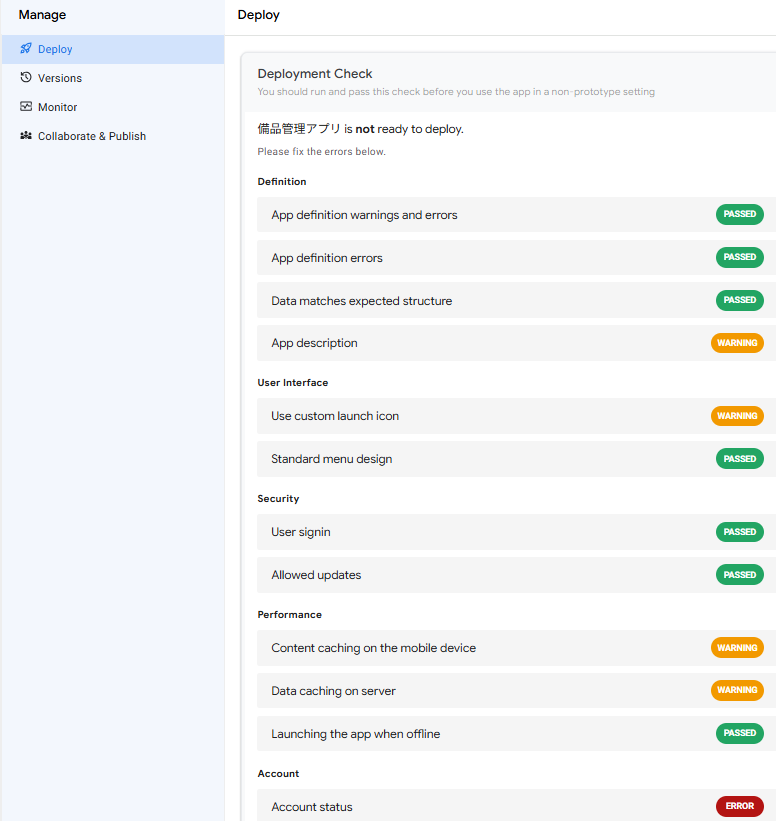
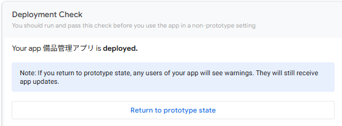
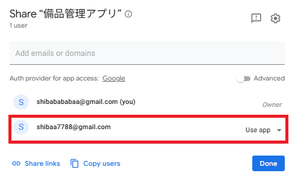
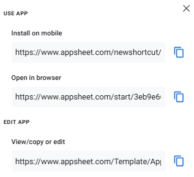
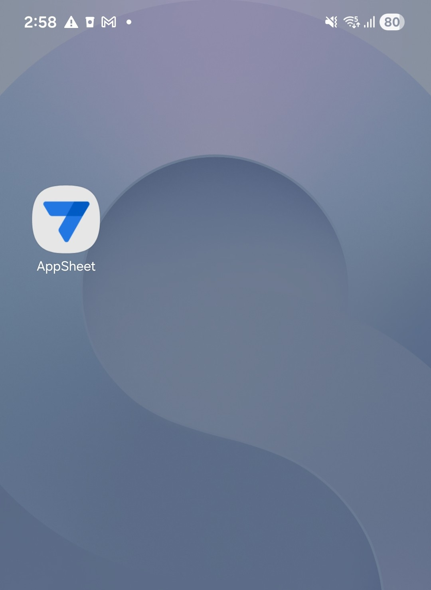
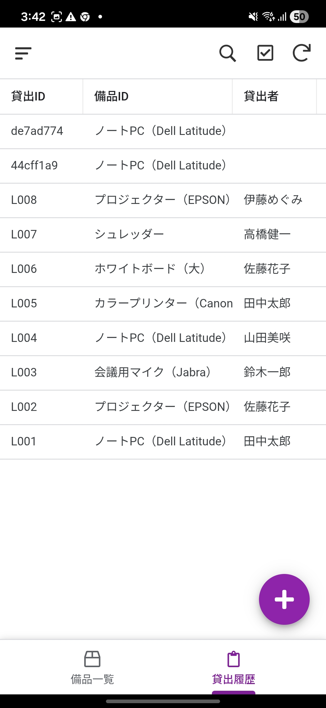
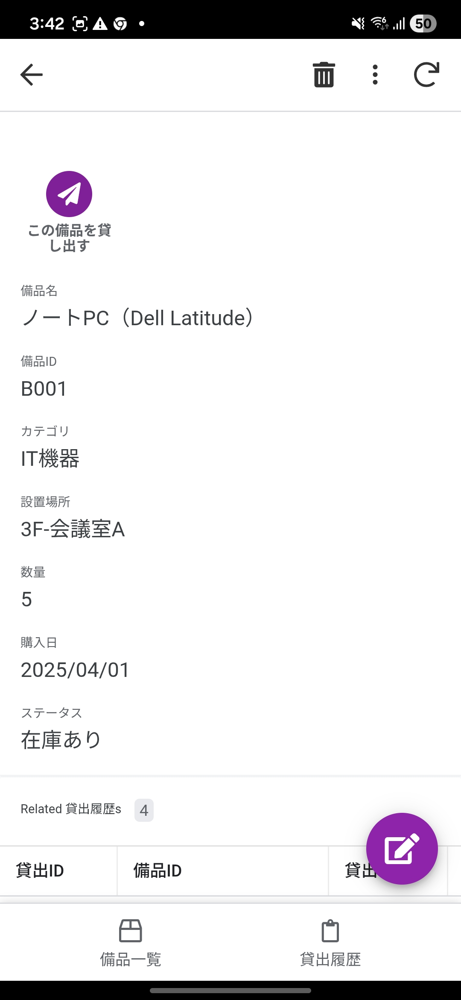
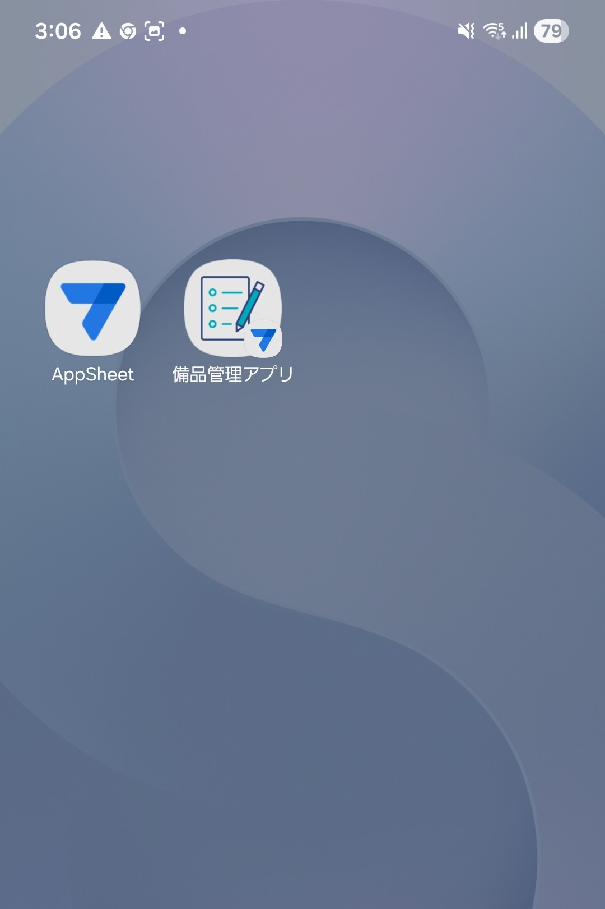

第6章：アプリを公開しよう
デプロイチェック・ユーザー共有・スマートフォンでの操作を学びます
6-1 プロトタイプとデプロイの違い
AppSheetで作成したアプリには 「プロトタイプ（Prototype）」 と 「デプロイ済み（Deployed）」 の2つの状態があります。ここまで作成してきたアプリはまだプロトタイプ状態です。本番運用するにはデプロイが必要です。
機能制限あり
問題を洗い出し
全機能利用可能
すぐに利用開始
■ プロトタイプとデプロイ済みの比較
| 項目 | プロトタイプ（Prototype） | デプロイ済み（Deployed） |
|---|---|---|
| 用途 | 開発・テスト | 本番運用 |
| ユーザー数 | 最大10人まで（テスト用） | プランに応じて無制限 |
| Automation | メールはアプリ作成者にのみ送信 | 設定した宛先に正常送信 |
| 費用 | 無料 | 有料プランが必要（※） |
| アプリ編集 | 可能 | 可能（変更は即時反映） |
■ デプロイしなくてもアプリは使えます
実は、デプロイしなくてもプロトタイプ状態のままアプリを利用することは可能です。個人利用や少人数のチームであれば、プロトタイプのままでも十分に実用的です。
| 項目 | プロトタイプ（無料） | デプロイ済み（有料） |
|---|---|---|
| アプリの基本操作（閲覧・追加・編集・削除） | ✅ 利用可能 | ✅ 利用可能 |
| Action（返却処理・貸出登録ボタン） | ✅ 利用可能 | ✅ 利用可能 |
| 共有できるユーザー数 | 最大10人まで | プランに応じて無制限 |
| Automation（メール通知）の宛先 | アプリ作成者のみ | 設定した宛先に送信 |
| スマートフォンでの利用 | ✅ 利用可能 | ✅ 利用可能 |
| 費用 | 無料 | 有料プランが必要 |
6-2 デプロイチェックを実行する
デプロイの前に、AppSheetの自動検証機能で問題がないか確認します。デプロイチェックでは、設定の不備やセキュリティ上の警告を事前に洗い出すことができます。
■ デプロイチェックの手順
AppSheetエディタの左ナビゲーションから 「Manage」 をクリックします。
「Deploy」 タブを選択します。
「Deployment Check」 セクションの 「Run deployment check」 ボタンをクリックします。
チェック結果が表示されます。結果には以下の3種類があります。
| 種類 | アイコン | 説明 | 対応 |
|---|---|---|---|
| Error | 🔴 | デプロイをブロックする致命的な問題 | 必ず修正 |
| Warning | 🟡 | 推奨される改善点（デプロイ自体は可能） | できれば対応 |
| Passed | 🟢 | 問題なし | 対応不要 |

Deploy > Deployment Check の結果画面（Error, Warning, Passed の表示例）" class="sharp">■ よくあるWarningと対処法
| Warningの内容 | 意味と対処法 |
|---|---|
| App does not have app description | アプリの説明文が未入力。Settings > Info > Description に概要を入力する |
| App icon is not configured | アプリアイコンが未設定。Settings > Info > App Icon で設定する |
| Security: User signin is not required | サインインが不要になっている。Security > Require Sign-In を ON にする |
6-3 アプリをデプロイする
デプロイチェックで問題がなければ、アプリをデプロイ（本番状態に移行）できます。デプロイには有料プランが必要です。無料プランのまま利用する場合は、このセクションはスキップして 6-4「ユーザーとアプリを共有する」 に進んでください。プロトタイプ状態のまま共有・利用が可能です。
■ デプロイ手順
デプロイチェック完了後、「Move app to deployed state」 ボタンをクリックします。
確認ダイアログが表示されたら内容を確認し、「Move to Deployed State」 をクリックします。
画面上部のステータスが 「Deployed」 に変わったことを確認します。

■ デプロイ後にできるようになること
| No. | 機能 | 説明 |
|---|---|---|
| 1 | Automationの正常動作 | メール通知が設定した宛先に送信される（プロトタイプでは作成者のみ） |
| 2 | ユーザーへの本格共有 | 10人以上のユーザーとアプリを共有可能（有料プラン） |
| 3 | 安定版の管理 | Manage > Versions で安定版のアプリバージョンを管理できる |
■ デプロイを元に戻す（プロトタイプに戻す）
デプロイ後にプロトタイプ状態に戻すことも可能です。
Manage → Deploy タブを開きます。
Deployment Check セクションにある 「Return to prototype state」 をクリックします。
6-4 ユーザーとアプリを共有する
アプリを利用するユーザーを追加します。共有はプロトタイプ状態でも可能です（最大10人まで）。デプロイの有無にかかわらず、以下の手順でユーザーを招待できます。
■ 共有方法の種類
■ 個別ユーザーへの共有手順
AppSheetエディタのタイトルバーにある 「Share」アイコン（人型のアイコン） をクリックします。
「Share app」 ダイアログが表示されます。
テキスト入力欄に、共有したいユーザーの メールアドレス（例：tanaka@example.com）を入力し、Enter を押します。複数人追加する場合は繰り返します。
アクセス権限を選択します。
| 権限 | 説明 | 推奨対象 |
|---|---|---|
| Use app | アプリを使用できる（エディタは見られない） | 一般ユーザー |
| View/copy app | アプリ定義の閲覧・コピーが可能（編集不可） | 参考にしたい人 |
| Edit app | アプリの編集が可能（共同編集者） | 管理者・開発者 |
（任意）「Notify users」 にチェックを入れると、ユーザーに招待メールが送信されます。メッセージを編集することも可能です。
reCAPTCHA認証（「I'm not a robot」）を完了します。
「Send」（または「Share」）をクリックして共有を完了します。

example.com）を入力します。ただしセキュリティ上、gmail.com などの一般的なドメインへの共有はAppSheetによってブロックされます。
6-5 共有リンクを送信する
共有設定が完了したら、ユーザーにアプリへのリンクを送信します。ユーザーはリンクをクリックするだけでアプリを利用開始できます。
■ 共有リンクの取得手順
タイトルバーの 「Share」アイコン をクリックして、Share app ダイアログを開きます。
「Share links」 をクリックします。
以下のリンクが表示されるので、用途に応じてコピーします。
| リンクの種類 | 説明 | 対象 |
|---|---|---|
| Install on a mobile device | スマートフォン・タブレットにアプリをインストール | モバイルユーザー |
| Open in a browser | PCのブラウザでアプリを開く | PCユーザー |
| View/Copy/Edit in editor | AppSheetエディタでアプリを開く | 開発者・管理者 |

コピーしたリンクを、メール・チャット・社内ポータルなどでユーザーに送信します。
■ ユーザー側のアプリ利用開始フロー
リンクを受け取ったユーザーの操作は以下の通りです。
共有リンクをクリックします。
モバイルの場合、AppSheetホスティングアプリのインストールを求められるので、App Store（iOS）または Google Play Store（Android）からインストールします（初回のみ）。
Googleアカウントでサインインします。
アプリが表示され、すぐに利用を開始できます。ホーム画面にアイコンが追加されます。

■ スマートフォンでの操作確認
アプリがスマートフォンで正しく動作するか、実機で確認しましょう。PCのプレビューとは画面サイズやタッチ操作が異なるため、公開前に必ずチェックすることをお勧めします。
スマートフォンで AppSheet アプリ（ホスティングアプリ）を起動し、Googleアカウントでサインインします。
「備品管理アプリ」がアプリ一覧に表示されるので、タップして開きます。
備品一覧ビュー が表示されます。任意の備品をタップして詳細画面を開き、「この備品を貸し出す」 ボタンが表示されることを確認します。
画面下部のナビゲーションバーで 「貸出履歴」 タブに切り替え、データが正しく表示されることを確認します。
返却日が空欄のレコードを開き、「返却する」 ボタンが表示されることを確認します。


■ ホーム画面へのショートカット追加
AppSheetアプリをスマートフォンのホーム画面に追加すると、ネイティブアプリのようにワンタップで起動できるようになります。
| OS | 手順 |
|---|---|
| Android | 共有リンク（Install on a mobile device）をタップすると、自動的にホーム画面にアイコンが追加されます。追加されない場合は、AppSheetアプリ内のメニューから「Add Shortcut」を選択してください。 |
| iOS | 共有リンクをSafariで開き、共有ボタン（□↑）→「ホーム画面に追加」を選択します。または、AppSheetホスティングアプリから対象アプリを開くと自動でアイコンが追加されます。 |

■ 第6章のまとめ
| No. | やったこと | ポイント |
|---|---|---|
| 1 | プロトタイプとデプロイの違いを理解 | プロトタイプはテスト用、デプロイで本番運用 |
| 2 | デプロイチェックの実行 | Manage > Deploy > Run deployment check |
| 3 | アプリのデプロイ | Move app to deployed state でデプロイ完了 |
| 4 | ユーザーへの共有設定 | Share ダイアログでメールアドレスと権限を設定 |
| 5 | 共有リンクの送信 | Share links からリンクをコピーしてユーザーに配布 |